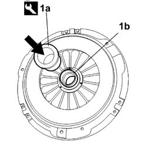
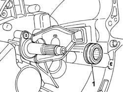

1820A30 THRUST BEARING - R + R WITH GEARBOX REMOVED
- Path
- Procedures > 18 CLUTCH UNIT > 1820 CLUTCH RELEASE CONTROLS > 1820A CLUTCH RELEASE MECHANICAL CONTROL > 1820A30 THRUST BEARING - R + R WITH GEARBOX REMOVED
- Kind
- repair procedure (removal / refitting; the operation number is the code)
- Applies to
- all engines; all production periods
- Interactive page
- https://sloeber94.github.io/elrnDB-fDct/en/#/244001009
Applies to: engines: 2.0 16V; all production periods
 Removing
Removing
 Refitting
Refitting1. Remove the thrust bearing (1b) from the clutch using the tool (1a).
 | Description | Code | Function |
|---|---|---|---|
1a | Extractor | 1.870.840.000 | Thrust bearing removal |

Applies to: engines: 2.0 16V; all production periods
Refitting
Removing- Fit the thrust bearing in its housing in the gearbox taking care to fit it correctly on the sleeve and on the fork lever.
Applies to: engines: 2.0 JTD 8V; all production periods
Removing
Refitting1. Remove the thrust bearing from its housing on the sleeve and from the retainers on the lever.

Applies to: engines: 2.0 JTD 8V; all production periods
Refitting
Removing- Fit the thrust bearing in its housing in the gearbox taking care to fit it correctly on the sleeve and on the fork lever.
Applies to: engines: 2.3 JTD 16V, 2.8 JTD 8V; all production periods
Removing
Refitting1. Remove the thrust bearing (1b) from the clutch using the tool (1a).
| Description | Code | Function |
|---|---|---|---|
1a | Extractor | 1.870.840.000 | Thrust bearing removal |
Applies to: engines: 2.3 JTD 16V, 2.8 JTD 8V; all production periods
Refitting
Removing- Fit the thrust bearing in its housing in the gearbox taking care to fit it correctly on the sleeve and on the fork lever.